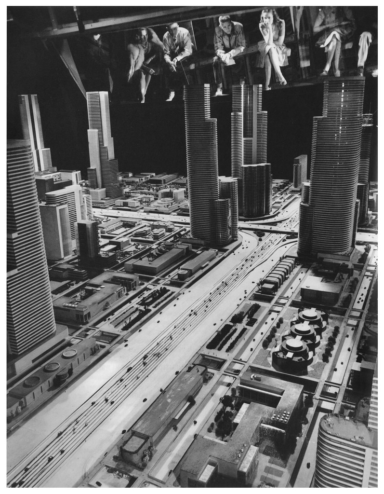
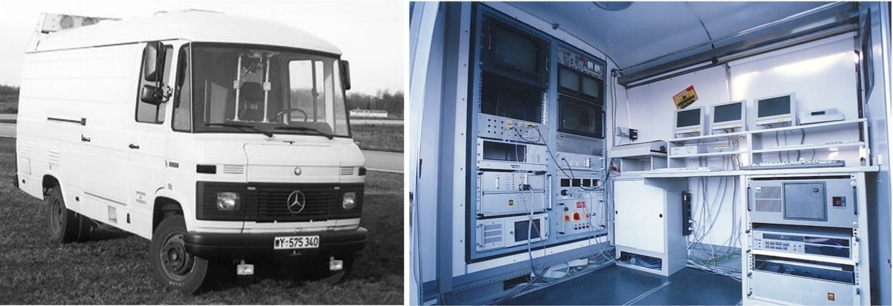
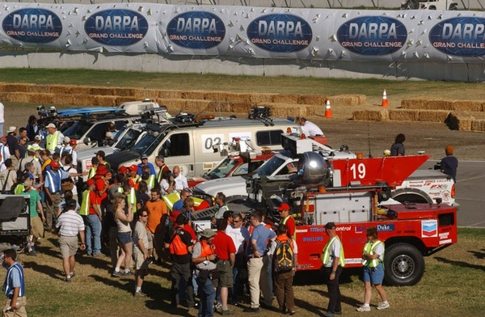
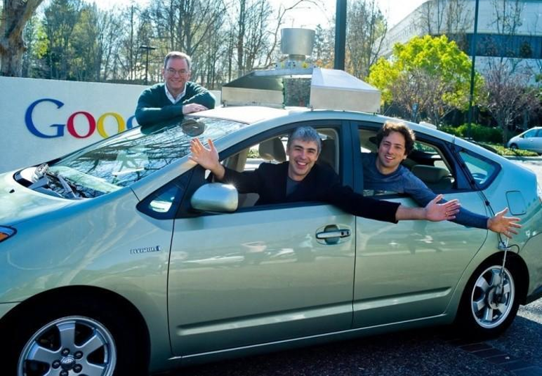
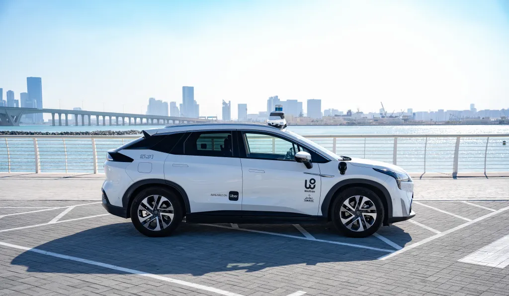
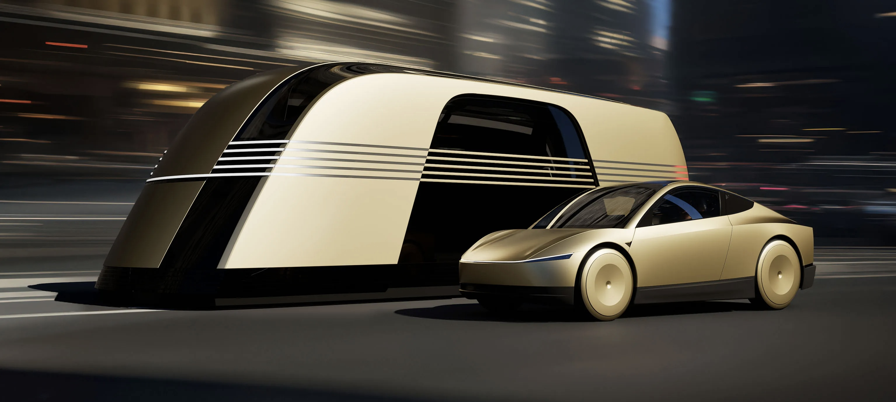

JIADUAN
JIADUAN
JIADUAN
JIADUAN

The concept of a driverless car dates back to the 1920s and 1930s, when radio-controlled vehicles were demonstrated for entertainment. In the 1950s, General Motors presented a futuristic vision of automated highways at their "Futurama" exhibit. However, these early ideas remained theoretical and lacked practical implementation.

In the 1980s, real progress began in academic and research institutions. Notably, in 1986, Ernst Dickmanns and his team at Bundeswehr University in Germany developed the first vision-guided autonomous vehicle, which successfully drove on German highways.

A significant milestone came in the 2000s with the DARPA (Defense Advanced Research Projects Agency) Grand Challenge. In 2004, the first challenge ended in failure, with no vehicle completing the course. But in 2005, Stanford University's "Stanley" won the second challenge, completing a 132-mile desert course autonomously. This competition ignited rapid progress in autonomous vehicle technology.

The 2010s saw major tech companies and automakers invest heavily in autonomous driving. Google launched its self-driving car project (later known as Waymo) in 2009, achieving notable milestones such as fully autonomous rides in urban environments.
Automakers like Tesla, BMW, Audi, and Mercedes-Benz began integrating semi-autonomous features such as adaptive cruise control, lane-keeping assistance, and autopilot modes. The development of deep learning, computer vision, and sensor fusion (using LIDAR, radar, and cameras) further improved the capabilities of autonomous systems.

Today, autonomous driving is being tested in real-world environments across the globe. Companies like Waymo, Cruise, Baidu, and Tesla are competing to deploy safe and reliable self-driving technology. Some cities in the U.S. and China already have robotaxi services available to the public.
Despite progress, challenges remain. These include ensuring safety in unpredictable environments, ethical decision-making in emergencies, legal regulations, and public trust. Full Level 5 autonomy—where a vehicle drives entirely without human intervention in all conditions—has yet to be achieved.

The history of autonomous driving is a story of visionary ideas, technological breakthroughs, and persistent innovation. While fully autonomous vehicles are not yet common on our roads, the foundations have been laid, and the journey toward a driverless future continues.